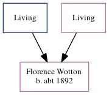

Florence Caroline Wotton c1892 -
[ Home ] | [ Calendar ] | [ Surnames Index ] | [ Errors ] | [ Family History ]The child of Thomas Wotton and Mary Mount, Florence Wotton, the first cousin twice-removed on the mother's side of Nigel Horne, was born in Herne Bay, Kent, England c. 18921,2.
During her life, she was living in Clapham, London, England in 19011; and in Battersea, London, England on 2 Apr 19112.
Parents
- Thomas
- Mary A
Citations
- 1901 England Census Online publication - Provo, UT, USA: The Generations Network, Inc., 2005.Original data - Census Returns of England and Wales, 1901. Kew, Surrey, England: The National Archives of the UK (TNA): Public Record Office (PRO), 1901. Data imaged from the National (Relation to Head of House: Daughter)
- 1911 England Census Online publication - Provo, UT, USA: Ancestry.com Operations, Inc., 2011.Original data - Census Returns of England and Wales, 1911. Kew, Surrey, England: The National Archives of the UK (TNA), 1911. Data imaged from the National Archives, London, England. (Marital Status: SingleRelation to Head of House: Daughter)
Media
England & Wales births 1837-2006 Transcription - BMD-B-1892-1-AZ-000628-111
Family Tree
Map
Generated by ged2site. Last updated on Jul 3, 2024
Known Issues
May have been living with mother on 1901, but the addresses don't match or aren't detailed enough to be sure
May have been living with father on 1901, but the addresses don't match or aren't detailed enough to be sure
May have been living with mother on 2 Apr 1911, but the addresses don't match or aren't detailed enough to be sure
May have been living with father on 2 Apr 1911, but the addresses don't match or aren't detailed enough to be sure